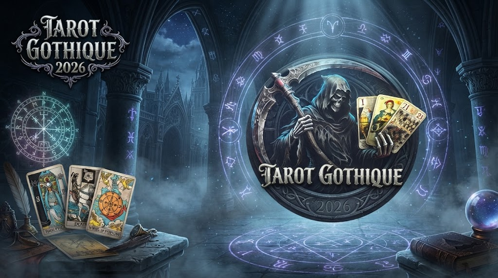

Plongez dans l'arène ténébreuse
L'expérience ultime du tarot en France et à travers les pays du monde — Application mobile Android & Solo / Multijoueur
Affrontez des passionnés de jeux de cartes en France ou partout dans les pays du monde. Maîtrisez le Tarot 2026 en ligne ou perfectionnez vos tactiques contre une intelligence artificielle redoutable.

Compétition, Multijoueur et Solo
Jouez en ligne aux jeux de cartes avec d'autres passionnés ou profitez de parties de tarot fluides hors-ligne face à des bots dotés d'une IA poussée.
Ambiance Gothique
Un design visuel soigné aux teintes sombres, contrastes élevés, crânes stylisés et finitions dorées.
Règles (5 Joueurs)
Retrouvez toutes les subtilités du tarot traditionnel à 5 joueurs avec gestion des contrats et des scores.